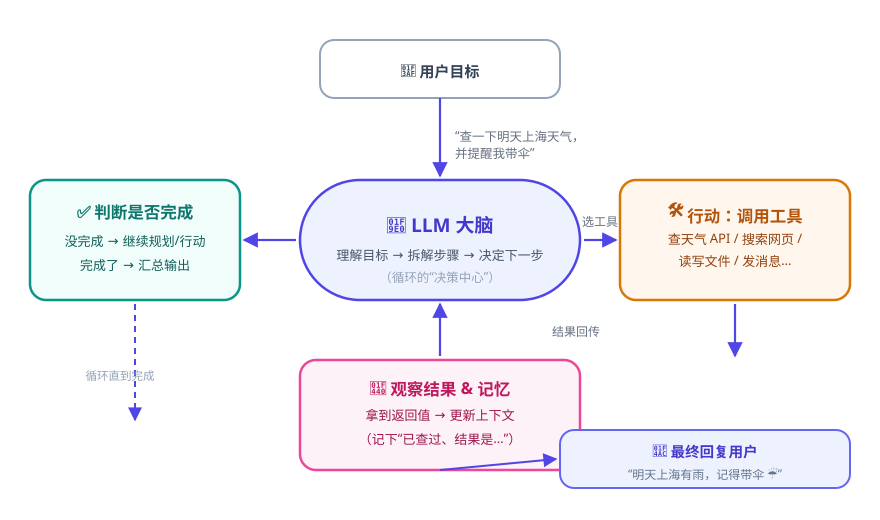
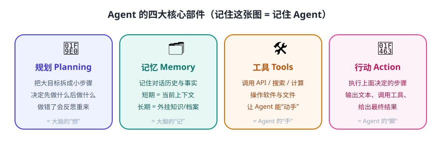

如果说 LLM 是“大脑”，那 Agent 就是给大脑装上身体（工具）、记事本（记忆）和工作流程（循环）的完整系统。今天我们用“帮妈妈安排周末”这个例子，把 Agent 拆开看。
一个任务在 Agent 内部是怎么流转的
你给 Agent 的目标是：“妈妈周六要来我家，帮我安排一顿 3 人晚餐，考虑她不吃辣。” 它不会一次性“变出”答案，而是进入一个循环：

对应上面这个任务，它大概会这样“想”和“做”：
- 规划：先决定——① 确认人数与忌口 → ② 找 3 家合适餐厅 → ③ 查评分与是否有位 → ④ 给出推荐。
- 行动：调用“本地生活搜索工具”查“3 人、不辣、周六晚”的餐厅。
- 观察：发现结果里有 2 家评分 4.8 的川菜馆——但川菜偏辣，不符合“不吃辣”，于是调整关键词再查。
- 判断：找到合适的 → 汇总成“推荐 + 理由 + 预订建议”回复你；没找到 → 继续循环或主动问你。
四大核心部件

- 🧠 规划（Planning）：把模糊目标拆成可执行步骤，决定顺序；做错时能“反思”并重来。实现方式从“写死的流程”到“让 LLM 现场拆解”都有（第 13 天详解）。
- 🗂️ 记忆（Memory）：短期记忆=当前对话上下文；长期记忆=外部的知识库/档案/偏好。没有记忆的 Agent 每次都是“第一次见你”（第 6 天详解）。
- 🛠️ 工具（Tools）：搜索、计算器、天气 API、读写文件、发邮件、执行代码……工具让 Agent 能接触到 LLM 本身接触不到的真实世界（第 5 天详解）。
- 👣 行动（Action）：把规划变成实际输出：回复文字、调用工具、操作软件。循环中“做”的那一步。
两个常见的专业名词，先混个脸熟
ReAct（Reason + Act）
“想一步、做一步、看结果、再想下一步”的循环范式，是当前很多 Agent 的基本盘。第 13 天我们会拿它开刀。
“想一步、做一步、看结果、再想下一步”的循环范式，是当前很多 Agent 的基本盘。第 13 天我们会拿它开刀。
Plan-and-Execute
先一次性制定完整计划，再逐步执行、按需调整。适合任务步骤明确、较长的场景。
先一次性制定完整计划，再逐步执行、按需调整。适合任务步骤明确、较长的场景。
常见疑问
Q：Agent 一定需要 LLM 吗？
A：不一定。规则也能做 Agent（比如“如果 A 就做 B”的自动化流程）。但 LLM 让 Agent 能理解开放式目标——这也是为什么这几年 Agent 突然变强。现代 Agent 几乎都基于 LLM。
A：不一定。规则也能做 Agent（比如“如果 A 就做 B”的自动化流程）。但 LLM 让 Agent 能理解开放式目标——这也是为什么这几年 Agent 突然变强。现代 Agent 几乎都基于 LLM。
Q：Agent 会一直循环停不下来吗？
A：会，这是真实风险！所以工程上必须设置：最大步数、超时、预算上限、以及“不确定就停下来问人”的兜底。安全边界从 Day 5 开始会反复强调。
A：会，这是真实风险！所以工程上必须设置：最大步数、超时、预算上限、以及“不确定就停下来问人”的兜底。安全边界从 Day 5 开始会反复强调。
Q：一个 Agent 和一个“多 Agent 系统”什么关系？
A：一个 Agent 单打独斗；多 Agent 像公司——有“项目经理”拆活，分给“研究员”“写手”等不同角色协作（第 19 天）。先把单个 Agent 学扎实。
A：一个 Agent 单打独斗；多 Agent 像公司——有“项目经理”拆活，分给“研究员”“写手”等不同角色协作（第 19 天）。先把单个 Agent 学扎实。
✍️ 今日练习（约 12 分钟）
- 拿纸笔，选一个任务（如“帮我准备明天的面试”），按规划 → 行动 → 观察 → 判断写出至少两轮循环，标注每一步用到的部件。
- 找任意一个 AI 助手，让它“帮我查一下明天北京的天气，并建议穿什么”，观察它的回答里有没有“调用工具”的痕迹（比如显示“正在搜索”）。
- 对着图 3-1，用自己的话把循环讲给家人/朋友听（讲出来 = 真正记住）。
📌 今日小结
四要素规划 Planning · 记忆 Memory · 工具 Tools · 行动 Action
工作循环目标 → 规划 → 行动 → 观察 → 判断 →（未完成）再循环
ReAct“想—做—看”循环范式，现代 Agent 的基本盘
工程提醒必须有最大步数 / 超时 / 人工兜底，防止 Agent 无限循环
明天预告：怎么“指挥”LLM 这个大脑？开始学提示词工程——把需求说清楚的第一课。